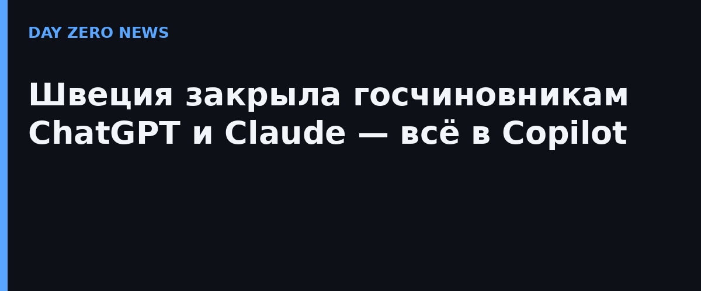

Поводом стала внутренняя ревизия: аудиторы нашли «несколько примеров проблемного использования открытых ИИ-сервисов» — сотрудники заносили в них чувствительную информацию и неаккуратно обращались с ответами, сгенерированными моделью. Директор по цифровизации канцеляриата Микаэль Веттеркранц написал на внутреннем интранете, что применение ИИ-сервисов «без соглашения» может иметь «последствия для нашей информационной безопасности». Отдельного публичного пресс-релиза правительство не выпускало — решение известно по интранет-сообщению и репортажу редакционного радио Ekot.
Речь идёт только о служебных компьютерах: личное использование ChatGPT и Claude шведам никто не запрещает. Часть сотрудников сохранит доступ к обеим моделям через внутреннюю платформу, которую канцеляриат разработал сам, — то есть не столько запрет, сколько перевод в контролируемый контур. Копилка опыта уже есть: DeepSeek ограничили раньше, похожие меры ввели Налоговое ведомство (Skatteverket) и ведомство Sis, а Служба судебных приставов Kronofogden решение ещё обсуждает.
После ревизии в канцеляриате повысили настройки безопасности самого Copilot — какие именно, пресс-служба уточнять отказалась, сославшись на соображения безопасности. То есть даже «одобренный» инструмент чиновникам посчитали нужным подкрутить. Это хороший пример взрослой позиции: вопрос не «пользоваться ли ИИ на работе», а «через какой контур, с какими соглашениями о данных и с кем в договоре».
Российские суды тем временем идут по обратному маршруту — не ограничивают, а внедряют: по словам председателя ВС РФ Вячеслава Краснова, пилотирование ИИ-сервисов идёт более чем в 20 регионах, а доступ всех судов к таким сервисам обещают в среднесрочной перспективе. Разница подходов наглядная: Стокгольм сначала строит разрешительный контур, Москва расширяет применение — какой путь окажется устойчивее, покажут утечки, то есть их отсутствие.